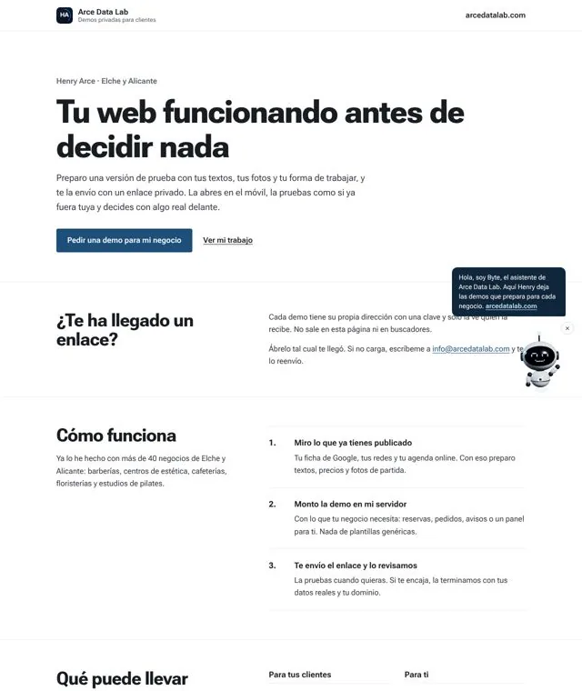
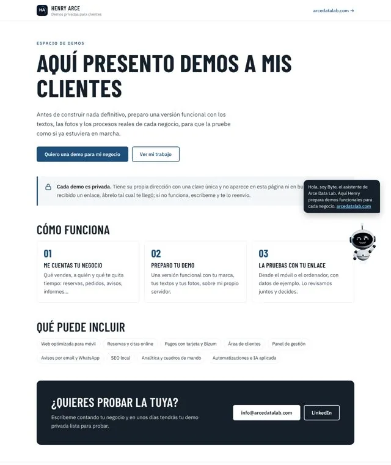

Design with your brand
Mobile-friendly, accessible and without heavy templates.
A website that loads fast, shows up on Google and lets customers book or buy without calling you. Or an application built around how your company works, instead of you adapting to generic software. I build it, publish it on my own infrastructure and maintain it.
Mobile-friendly, accessible and without heavy templates.
Titles, structured data, sitemap and speed, so Google understands it.
Bookings and appointments, a shop, forms, a client area, a CRM or a management panel.
HTTPS, nightly backups and separate test and production environments.
Legal notice, privacy and cookies, adapted to what your site does.
HTML y CSS, Node.js, Next.js, Python, PostgreSQL, Docker
Same content, redesigned: the landing page of my client demos. Drag the line to compare.


28 example websites for made-up businesses, so you can look at styles before we start.
What changes compared with hiring an agency or off-the-shelf software